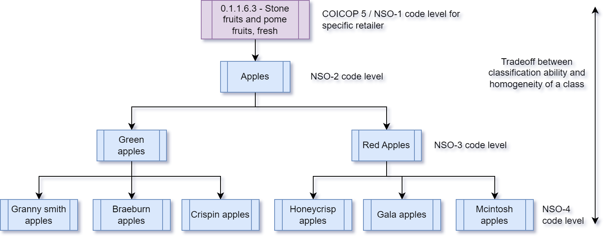
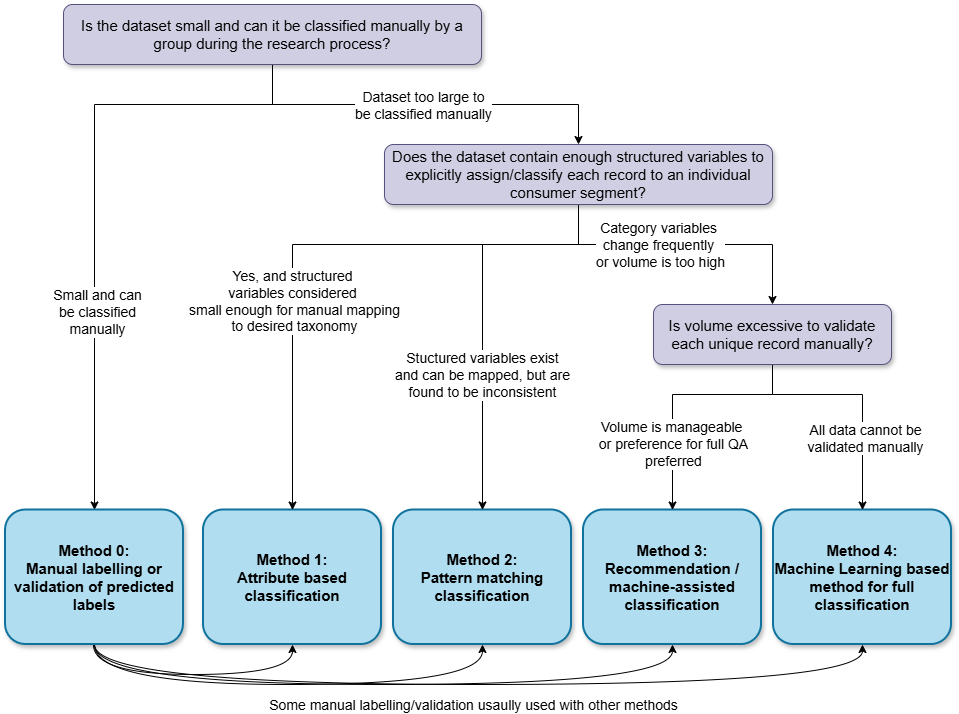

Pre-conditions and deciding on appropriate classification methods
There are several factors that NSO typically consider when approaching or implementing classification, such as the scale and complexity of the task, whether this is just the initial phase of classification or recurrent classification in production, or the structure and quality of the data. Evaluating these factors is useful to select the method(s) most appropriate for each use case.
Also see another article in this section:
- Note on variables applicable for classification — Several variables obtained during the acquisition process are typically applicable for classification.
Page information
| Version | v2 |
| Last updated on | 2025-04-28 |
| Summary of changes | Initial publication |
| Page history | See here |
Consideration of classification complexity
The complexity of classifying any given dataset can vary dependent on several factors. These factors should be considered before deciding which classification method(s) to adopt to classify each dataset. In this section, we explore these factors.
Scale of the task
In most datasets, there is a many-to-one relationship between rows in the dataset and unique products. For example, if a supermarket provides daily data for 400 stores, then a single year of data may contain up to (365 days x 400 stores = ) 146,000 entries for a single barcode (GTIN). Typically, classification should be performed at the product-level (using SKUs or GTINs) so that each product is classified once, then propagated across its many entries within the transactional dataset. Since we classify at the product-level, the scale of the classification task can often be significantly less than it first seems. (1)
The NSO has some flexibility on what it chooses as the unique product when classifying. Ideally, the same granularity is used for clasification as for price index compilation (for instance SKU is used to classify to avoid the overly detailed nature of GTIN). However this is not always desirable if the unique products for price index methods are aggregates of lower level products (as unique products for price indices are often described as outputs after 'aggregate across products') and require classification category as the input for that aggregataion. In this case, a granularity that is stable should be chosen. For instance NSOs may classify to GTIN knowing that all GTINs with the same product name falling under the same SKU within that category are aggregated up to get one unique product and its unit price for input to the price index methods step.
When an NSO first acquires a large dataset, the NSO faces a challenging initial task of classifying the dataset for the first time, particularly if the retailer stocks a lot of products. After the initial classification task, the ongoing monthly task of maintaining a fully-classified dataset depends on the overall scale of the unique products and the product churn rate within the data.
Table 1 shows synthetic examples of stores of varying complexity when it comes to the scale of the classification task:
- The electronics store stocks few products and the resulting classification task is small both initially and on an ongoing basis. The NSO may avoid complex automation techniques that may take more time to maintain than they save.
- The supermarket requires significant classification work to classify it initially, but due to a small product churn rate, the ongoing work to sustain a classified dataset is relatively small. The NSO may choose to invest into automation to improve efficiency (and likely favour simpler automation methods) but this may be optional depending on NSO resources.
- The clothing store not only stocks a lot of products, but also has a very high churn rate and as a result automation is likely a necessity for maintaining a fully-classified dataset.
Table 1: Scale of classification depends on both the number of products stocked and the churn rate.
| Store: Electronics | Store: Supermarket | Store: Clothing | |
| # products stocked | 300 | 40,000 | 20,000 |
| Product churn rate | 20% | 2% | 30% |
| # labels needed (initial month) | 300 | 40,000 | 20,000 |
| # labels needed (each month after) | 60 | 800 | 6,000 |
When starting any classification task, it is recommended the NSO measures the scale of the task so that a proportionate classification method can be chosen.
Homogeneity of the desired classifications
At a minimum, all NSOs classify data into groups of similar products or services according to the COICOP classification hierarchy (or similar taxonomy used within the NSO). However, NSOs may choose to further stratify into additional hierarchical levels. Stratifying further in this way improves homogeneity, which is desirable for index compilation, but can also increase the complexity of the classification task.
An example is shown in Figure 2. As (this) NSO uses COICOP, they are required to classify to COICOP-5 and, therefore, at a minimum must split men’s, women’s, and children’s clothing. NSOs then decide to what extent they further stratify the data:
- Classifying to COICOP-5/NSO-1 and no further produces very heterogeneous elementary aggregates which may not be desirable.
- Classifying to NSO-3 may increase the chance of misclassification when the labeler or algorithm lacks sufficient information to accurately choose between classes. This lack of information can introduce large class imbalances, which can complicate machine learning processes, especially if there there are few examples available for training.
- Classifying to NSO-2 may offer a suitable balance between homogeneity and classification complexity requirements.
Figure 2: NSOs will need to consider the trade-off between homogeneity and classification complexity when deciding how granular to make their strata.

NSOs may also choose to classify at a lower level than the level that elementary aggregates are calculated (for instance if the classification performance is easier to do at the lower level but there is insufficient weight data to integrate at this lower level). In this case, the price index step may need to have a mapping to join the lower level classes into the class at which the elementary aggregate method needs to be calculated (i.e. a concordance, such as to go from NSO-3 to NSO-2 if NSO-2 is the level at which elementary aggregate is calcuated as per Figure 2 above). See Aggregation for more detail about integration approaches.
Data quality or stability considerations
Data quality and stability consideration are often key decision points for NSOs to select appropriate methods. Sometimes structured variables are very stable and simpler methods may sufficice (more on this in the below scenario). Sometimes however, data may be either of bad quality thereby making classification challenging, or the variables are not very stable and more sophisticated methods are needed:
- Low data quality issues - could occur if specific variables are sometimes missing for specific products in the dataset. Sometimes so much information is missing that it may be impossible to classify the product at all. While it is not desirable to drop (or filter out) such records, if the NSO does not know what category the product applies to, it may be appropriate to remove them from all in-scope categories as false positives may contribute to bias due to misclassification (4).
- Low stability of data in variables used for classification - data may be present but be very different across time. For instance product descriptions or breadcrumbs from a website may vary quite a lot over time, hence it may be difficult to apply to simpler rule-based approaches. In this case, NSOs can approach the situation with an eye to the scale of the task. Small scale classification tasks could be handled with manual classification (see Method 0 for more details), whereas high volume cases can be handled with Machine Learning approaches with Natural Language methods to find patterns in the data (see method 4 and in part method 3 for more details on Machine Learning methods).
Similarity of retailer hierarchy to NSOs chosen classes
Sometimes the way that the retailer organizes its products is very similar to the class design chosen by the NSO. If the NSO has a laptops class, and the retailer’s hierarchy contains a laptops section, then the classification approach could be as simple as automatically mapping from hierarchy to class. You can read more about rules-based classification in the chapter on Method 1.
Note that care must be given when performing automatic mappings in this way. Retailers often cross-sell products. For instance when someone looks to buy a laptop, they may also want to buy a laptop bag at the same time, so retailers may stock and list the two adjacently. This can make laptop bags (and other cross-sold products) appear in the laptops hierarchy. A keyword classifier for filtering out unwanted products could be considered for removing products like these. See Method 2 for more information on this case.
Differentiating initial classification from developing a recurrent production process
While methods that can be applied to classifications are pretty standard (more on selecting methods below), the objective of classification changes considerably the nature of the task that needs to be done. Table 2 summarizes the key aspects that are different between the two types of classification.
Table 2: Aspects different between initial and recurrent classification
| Aspect to consider | Initial classification: key considerations | Recurrent classification: key considerations | |
| Time to complete task | Time to complete could span months and usually depends on the timeline of the research project. The process may also be iterative as different methods and different level of validation is trialed. If NSOs have targeted production officers, they may support or supervise this process part-time, but usually different individuals are doing the work. | Time to classify is usually tightly bounded to the production schedule of the CPI. Only a few days may be allocated to this task, and the process has to be stable and robust. Automation of the process is thus usually a high priority. | |
| Scale of task | Scale depends on the size of dataset that needs to be labelled. Commonly, a year is used, however if multilateral methods with a 25 month window are being researched, a larger dataset may need to be labelled. | Scale depends on the overall size of the retailer (i.e. how many products are sold in total) and the churn rate. As only new unique products need classification, task is much smaller. | |
| The process usually applied to classify unique records | Typically, a representative time period that is necessary to study and decide on a price index applicable for production is first identified (commonly 12 months for bilateral or 13/25 months for multilateral methods). All unique products occurring during this backcast period are identified, and are prioritized for classification. Depending on the skills, complexity of the task, time to complete the project, or other factors - different methods may be chosen and for different segments of the data. For instance a more rule-based system may be used (such as method 2) as it can be designed slowly and iteratively. Or for instance to prepare for a high scale scenario, a sample of the unique products may be manually labelled (using method 0), and a Machine Learning model may be developed (method 4) to predict the categories of all other products, which are then quality assured. This phase typically is an iterative research process as different methods are trialed and evaluated, and the most applicable method for production recurrent classification is developed. | The production classification method is developed beforehand, and applied on all new unique products. It is typically combined with quality assessment and quality control methods to evaluate how well the method works. | ||
vailable. If manual methods are used (i.e. method 0), then usually subject matter production experts are entrusted with this role. If automated methods are used, a sample (or all) unique records may also be manually checked/validated and performance statistics are calculated. Checks and contingency plans are usually put in place to evaluate when a method is failing and fix the problem quickly. | +——————————————————–+———————————————————————————————————————————————————————————————————————————————————————————————————————————————————————————————————————————————————————————————————————————————————————————————————————————————————————————————————————————————————————————————————————————————————————————————————————————————————————————————————————————————————————————————————————————————————————-+———————————————————————————————————————————————————————————————————————————————————————————————————————————————————————————————————————————————————————————————————————————————————+ | Supporting processes needed | | Additional processes may need to be put in place, especially for Machine Learning methods, most notably ML Operations or MLOps. Notably, statistics on the performance of the production method are calculated by sampling and manually validating new products. This guides whether data degradataion has occured and model retraining is necessary. Method 4 covers this in more detail. | +——————————————————–+———————————————————————————————————————————————————————————————————————————————————————————————————————————————————————————————————————————————————————————————————————————————————————————————————————————————————————————————————————————————————————————————————————————————————————————————————————————————————————————————————————————————————————————————————————————————————————-+———————————————————————————————————————————————————————————————————————————————————————————————————————————————————————————————————————————————————————————————————————————————————+
Determining methods most applicable to the task
As outlined above, a method for classification depends on many factors, including but not limited to the objective faced (initial or recurrent classification), data structure and quality, data volume faced, or skillset available at the NSO. As some of these factors change, most commonly the expertise of NSO staff, NSOs revisit the methods the choose to find a more optimal way to classify data. Below are several questions commonly asked by NSOs when they wish to choose a specific classification method:
- Is the scale of the task to classify or maintain a method small? For instance if the volume of work to classify records is sufficiently small, manual classification may be appropriate.
- Is the dataset structured and does the structure persist over long periods? In other words, is the obtained dataset highly structured with variables (such as say data provided categories), would simple rule or attribute based classification to persist with little risk?
- Similiarly, does the dataset contain a subset of records that need to be ‘filtered’ out and the rest of the data could feed the category of interest? This applies to the case of data that consists mostly of one consumption segment with only a small proportion of cross-sold products needing to be extracted. If so, simpler methods may be applicable.
- An example is air fare or traveler accommodation data usually has these attributes as data can be obtained from APIs and is highly structured (see Other alternative data sources for more detail);
- Are record descriptions rich but evolve over time? For instance if data describing each product is diverse and changes over time, more complex methods may be needed as simpler methods may be too changellenging to maintain. However this works well if the data is rich enough for advanced methods to be developed. This question can be considered an extension of #2 above.
- What is the volume of the validation task? If more advanced methods are adopted (following from #3 above), can annotators validate all or almost all records every month? This may be preferential if the volume is low as annotators can be quite accurate and the technical investment necessary to maintain advanced classification methods (Machine Learning) with lower proportions of validation may require considerable investment in processes (see Method 4 for more on MLOps).
Figure 2: A flowchart is outlined to support NSOs in the consideration of above questions and informing their decision of which classification method to pursue dependent on their measurement goals and the characteristics of their data.

The approaches are presented in the flowchart as distinct options – each described in full with their initial setup, maintenance process to maintain the accuracy of the classification on a regular basis, and examples of NSO experience in these methods:
- Method 0: Manual labelling or validation of predicted labels
- Method 1: Attribute-based classification method
- Method 2: Pattern matching classification method
- Method 3: Recommendation / Machine-assisted classification
- Method 4: Machine Learning classification method
Further to the 5 methods above, NSOs may find it useful to blend these methods to achieve the intended results. Detail on the approach, maintenance, and examples are provided:
- Blending classification methods (work in progress)
References and footnotes
(1) In the past it may have been necessary for NSOs to be careful when using scanner data as GTINs could be recycled and the same code came back but for a different unique product, requiring careful monitoring and reclassification. For countries that leverage GTIN, this seems to no longer be the case (https://gs1ca.org/standards/gtin-non-reuse/), however it is important to still validate this for other codes (i.e. non-GTIN codes).
(2) Office for National Statistics. (2021). Classification of new data in UK consumer price statistics. Office for National Statistics. Retrieved from https://www.ons.gov.uk/economy/inflationandpriceindices/articles/classificationofnewdatainukconsumerpricestatistics/2021-04-06
(3) Eurostat. (2017) Practical Guide for Processing Supermarket Scanner Data. Retrieved from https://circabc.europa.eu/sd/a/8e1333df-ca16-40fc-bc6a-1ce1be37247c/Practical-Guide-Supermarket-Scanner-Data-September-2017.pdf
(4) Spackman, W., Goussev, S., Wall, M., DeVilliers, G., Chiumera, D. (2024) "Machine Learning is (not!) all you need: Impact of classification-induced error on price indices using scanner data" Paper presented at the 18th Meeting of the Ottawa Group. https://stats.unece.org/ottawagroup/download/Papers-session-8-pres-1-spackman-et-al-2024-misclassification-is-not-all-you-need.pdf